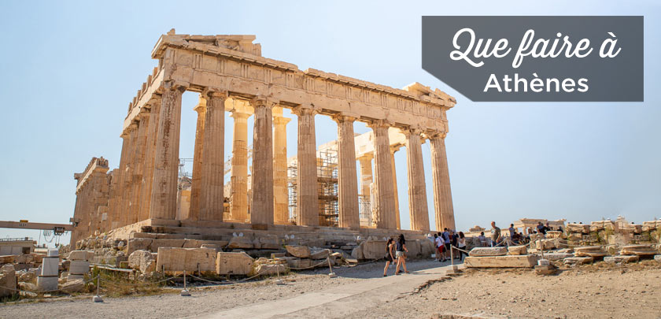

Athènes, capitale de la Grèce, est le centre de la vie économique, politique et culturelle du pays. Berceau de grands artistes et philosophes de l’Antiquité, Athènes a joué un rôle essentiel dans le développement de la démocratie. Il n’y a pas d’endroit comme Athènes pour faire un voyage dans les cultures grecques anciennes et se plonger dans la magie des grands temples et des bâtiments majestueux capables de durer dans le temps.
Athènes a une longue histoire de plus de 3000 ans, au cours de laquelle elle a exercé une influence importante sur le développement de la culture occidentale. La grande richesse monumentale d’Athènes a fait de cette ville une destination attirant énormément de visiteurs du monde entier. Qui n’a pas entendu parler du Parthénon, de l’Acropole, de l’Agora ou des différents temples grecs encore conservés à Athènes ?
Bien que certains édifices ne soient pas en parfait état de conservation, tous présentent une harmonie parfaite, caractéristique de l’architecture classique, ce qui peut surprendre les visiteurs et les laisser sans voix.Hormis son impressionnante richesse archéologique, la capitale grecque a beaucoup plus à offrir à ses visiteurs, à commencer par une cuisine méditerranéenne riche et variée. Ses légumes juteux, ses viandes délicieuses et ses fromages savoureux ne sont que le début d’une longue liste de succulents plats variés préparés à la grècque.
Un voyage en Grèce ne sera pas tout à fait complet sans avoir réalisé une excursion à travers la Grèce classique.
Avec 300 jours de soleil par an, vous êtes quasiment certains de bénéficier d’une météo clémente peut importe la période de l’année.
Depuis la crise financière, Athènes rime avec créativité, art et mode.
Athènes reste une ville abordable par rapport à d’autres capitales européennes comme Londres, Paris et Bruxelles.
Les sites archéologiques et les musées vous feront faire un bond passionnant dans l’Histoire.
Vous allez vous régaler! Les spécialités grecques sont préparées à base de délicieux produits frais dont regorge le pays.
L’icône de la ville a été élue « meilleur site touristique d’Europe » lors de la cérémonie des World Travel Award.
Envie de vous reposer après votre city-trip? Exilez-vous vers une des centaines d’îles aux alentours d’Athènes. De vrais petits paradis sur Terre!
Athènes comblera les envies des plus fêtards avec ces nombreux bars et clubs!
{kind=link}
{kind=link}
{kind=link}